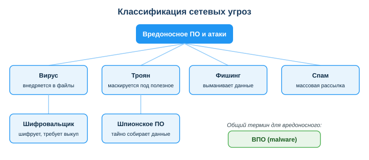
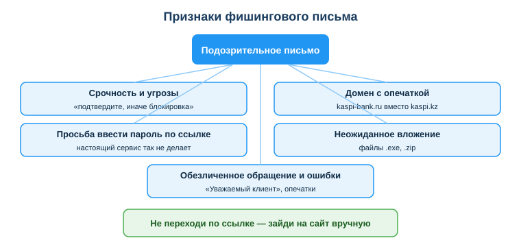

Дисциплина: Применение информационно-коммуникационных и цифровых технологий
Результат обучения: РО 2.1 — владение основами ИКТ · Объём темы: 2 часа
Квалификация: 4S06130103 «Разработчик программного обеспечения»
Представь обычное утро. Ты открываешь почту, а там письмо: «Ваш аккаунт GitHub заблокирован за подозрительную активность. Чтобы восстановить доступ, срочно подтвердите пароль по ссылке». Логотип на месте, текст деловой, ссылка синяя. Ты спешишь — через час созвон с командой, и потерять доступ к репозиториям совсем не вовремя. Палец уже над ссылкой.
Один клик — и ты вводишь логин и пароль на странице, которая выглядит как настоящий GitHub, но принадлежит злоумышленнику. Через секунду твои данные у него. А вместе с твоим аккаунтом он получает доступ к коду проектов, к чужим репозиториям, куда тебя приглашали, к секретам и ключам, которые иногда лежат в истории коммитов. Через одного неосторожного стажёра под удар попадает вся команда.
Эта тема — про то, как не оказаться на месте этого человека. И важно понять сразу: сетевые угрозы почти никогда не выглядят страшно. Это не «хакер в капюшоне ломает сервер». Чаще всего это вежливое письмо, знакомый логотип и одна поддельная буква в адресе сайта. Большинство взломов начинается не с гениальной атаки на технику, а с одного клика обычного человека, которого обманули [3; 8].
Почему это особенно важно лично для тебя как для будущего разработчика? Потому что ты работаешь с доступами: к серверам, к базам данных, к облакам, к системе контроля версий. Твой пароль — это ключ не только от твоей почты, но и от рабочих систем компании и данных её клиентов. Поэтому кибергигиена — не «дело отдела безопасности», а часть твоей профессиональной ответственности, такая же, как умение писать рабочий код [1; 2]. Навык замечать угрозу до клика экономит деньги, репутацию и нервы — и тебе, и всей команде.
После изучения темы ты сможешь:
kaspi-secure.ru вместо kaspi.kz).Прежде чем разбирать конкретные угрозы по отдельности, важно уложить в голове одну рамку, которая всё упорядочит. Все сетевые угрозы делятся на две большие группы по тому, на что они нацелены [1; 3]:
Запомни формулу: ВПО — это вредная программа, а фишинг — это способ обмануть человека. Посмотри на схему «Классификация сетевых угроз» (приложение А): слева собраны программы (ВПО), справа — способы обмана и доставки. Эта картинка — каркас всей темы; держи её в голове, когда читаешь дальше.
И сразу — важнейшее уточнение, без которого тема разваливается на куски: на практике обман и программы работают вместе. Чаще всего атака устроена как цепочка: сначала тебя обманывают (фишинговое письмо), а потом ты сам запускаешь вредную программу (открываешь вложение с трояном). То есть фишинг — это часто «дверь», через которую ВПО попадает на твой компьютер. Поэтому бессмысленно защищаться только антивирусом и не уметь распознавать обман: антивирус не спасёт, если ты сам, своими руками, обойдёшь его, поверив письму.
Вредоносное ПО (ВПО, по-английски malware от malicious software) — это любая программа, созданная, чтобы навредить. Цели у такой программы бывают разные: украсть данные, испортить или зашифровать файлы, тайно следить за тобой, захватить контроль над устройством или вымогать деньги [3].
Зачем нужен общий термин, если есть конкретные названия (вирус, троян и т. д.)? Затем же, зачем слово «фрукт» при наличии слов «яблоко» и «груша»: он позволяет говорить об общем свойстве. Когда специалист по безопасности говорит «на машине обнаружено ВПО», он не обязан сразу знать, вирус это или шпион, — важно, что программа вредная и её надо удалить. Поэтому первое, что от тебя требуется: понимать, что вирус, троян, шифровальщик и шпионское ПО — это всё частные случаи ВПО, а фишинг и спам — нет, потому что они не программы.
Частая путаница новичков: называть «вирусом» вообще всё плохое, что случилось с компьютером. Это неточно. Вирус — лишь один из видов ВПО, с конкретным механизмом (внедрение в файлы и распространение). Точные слова важны не ради формальности: если ты правильно определил тип угрозы, ты правильно выберешь и защиту. Разберём виды по очереди.
Сведём виды в таблицу, а затем разберём каждый подробно — что это, как попадает на устройство, чем опасен.
| Угроза | Что делает | Как попадает |
|---|---|---|
| Вирус | внедряется в файлы, распространяется, вредит | через заражённый файл/программу |
| Троян | маскируется под полезную программу | ты запускаешь его сам |
| Шифровальщик (ransomware) | шифрует файлы и требует выкуп | через вложение, ссылку, уязвимость |
| Шпионское ПО (spyware) | тайно собирает данные (пароли, ввод) | вместе с другой программой, незаметно |
Вирус. Главное свойство вируса — он внедряется в существующие файлы или программы и распространяется, заражая другие файлы и устройства, как биологический вирус заражает клетки. Сам по себе он обычно не «приходит» — он попадает к тебе внутри уже заражённого файла, флешки или программы. Чем опасен: может портить и удалять файлы, замедлять систему, а главное — распространяться дальше, например по сети предприятия, где один заражённый компьютер заражает соседние.
Троян (от «троянского коня»). Его главное свойство — маскировка. Троян выглядит как нужная, полезная программа: «бесплатный ускоритель компьютера», «взломанная версия платной программы», «кодек для видео». Ключевая разница с вирусом: троян не пробирается сам — ты запускаешь его собственными руками, потому что тебя обманули относительно того, что это за файл. Поэтому трояны почти всегда идут в паре с обманом (фишингом, рекламой, поддельными сайтами). Чем опасен: получив запуск, троян может открыть злоумышленнику удалённый доступ, украсть пароли, скачать другое ВПО.
Шифровальщик (ransomware, программа-вымогатель). Это, пожалуй, самый болезненный для бизнеса вид. Шифровальщик зашифровывает твои файлы — документы, фотографии, базы данных — так, что открыть их без специального ключа невозможно, и требует выкуп (часто в криптовалюте) за расшифровку. Чем опасен: для компании это может означать полную остановку работы — недоступны базы, документы, проекты. И важный урок: даже если заплатить выкуп, нет гарантии, что файлы вернут. Единственная надёжная защита — резервные копии (бэкапы): если у тебя есть свежая копия данных, шантаж теряет смысл.
Шпионское ПО (spyware). Его свойство — скрытность. Оно не ломает и не шифрует — оно тихо сидит и собирает данные: какие сайты ты открываешь, что вводишь с клавиатуры (включая пароли — это делает разновидность под названием «кейлоггер»), переписку, файлы. Чем опасен: ты можешь долго не подозревать о заражении, а злоумышленник всё это время видит твои пароли и личную информацию. Часто шпион приходит «прицепом» к другой бесплатной программе из ненадёжного источника.
Обрати внимание на закономерность: у всех четырёх разный механизм, но почти все пути заражения проходят либо через ненадёжный источник файла, либо через обман. Отсюда и вытекают меры защиты, к которым мы придём.
Теперь переходим из мира программ в мир обмана. Фишинг (от англ. fishing — «рыбалка»: тебя ловят «на наживку») — это попытка выманить у тебя данные с помощью поддельного письма, сайта, сообщения или звонка [8]. Цель — заполучить твой логин и пароль, код подтверждения, реквизиты банковской карты, доступ к аккаунту.
Ключевое отличие фишинга от ВПО ещё раз: здесь в момент атаки нет вредной программы — есть обман. Никто не взламывает твой компьютер технически. Тебя убеждают самостоятельно отдать данные или совершить опасное действие. Это работает не через уязвимость техники, а через уязвимость человека: спешку, страх, доверие, любопытство, желание получить выгоду. Этот приём в целом называют социальной инженерией — манипуляцией людьми для получения доступа.
Почему обман эффективнее технического взлома? Потому что человека уговорить часто проще, чем взломать хорошо защищённую систему. Можно поставить самый надёжный замок (сложный пароль), но если хозяин сам откроет дверь, поверив «сантехнику», замок бесполезен. Именно поэтому статистика безопасности из года в год показывает: человек — самое слабое звено [8].
Рычаги, на которые давит социальная инженерия, стоит знать в лицо:
Заметь: все эти рычаги отключают у тебя спокойное обдумывание. Поэтому первое и главное правило защиты от фишинга — заметить давление и замедлиться. Если письмо торопит и пугает — это уже повод насторожиться.
Спам — массовая нежелательная рассылка. Сам по себе спам — это чаще про навязчивую рекламу, но он опасен тем, что служит главным каналом доставки и фишинга, и ВПО: именно в потоке спама приходят поддельные письма и вложения с вредом. Поэтому спам стоит в схеме рядом с фишингом — это не отдельная «вредная программа», а способ массово закинуть «наживку» как можно большему числу людей.
Это — практическое ядро темы. Хорошая новость: фишинг почти всегда оставляет следы. Нужно научиться их замечать. Посмотри на схему «Признаки фишингового письма» (приложение Б) и разбери каждый признак.
1. Срочность и угрозы. «Срочно подтвердите, иначе аккаунт удалят», «у вас 24 часа», «карта будет заблокирована». Почему это подозрительно: настоящие сервисы редко загоняют тебя в жёсткий срок и не угрожают. Спешка — главный инструмент мошенника, потому что в спешке ты не проверяешь детали.
2. Подозрительный адрес отправителя и домен ссылки. Это самый надёжный признак. Мошенник не может использовать настоящий домен, поэтому регистрирует похожий — домен-двойник: kaspi-secure.ru вместо kaspi.kz, github-secure.com вместо github.com, e-gov-kz.net вместо egov.kz. Приёмы подделки, которые надо знать:
kaspi-bank.ru, apple-support.com;.ru, .net, .com вместо официальной .kz;0 вместо o, l (эль) вместо I (большой i), rn вместо m;kaspi.kz.security-check.com — настоящая часть здесь только security-check.com, а kaspi.kz приписано слева для отвода глаз. Главный домен — это то, что стоит прямо перед первым «/» после имени, читай его справа налево по точкам.Почему это работает как признак: домен подделать «в точности» нельзя — он либо настоящий, либо нет. Поэтому проверка адреса — твой самый сильный инструмент.
3. Просьба ввести пароль, код или реквизиты по ссылке. Запомни как закон: настоящий банк или сервис никогда не просит ввести пароль или код из SMS по ссылке из письма. Любая такая просьба — почти стопроцентный фишинг. Код из SMS вообще нельзя сообщать никому и нигде, кроме как вводить в само приложение.
4. Неожиданное вложение. Файлы .exe, .scr, .zip, .js от неизвестного отправителя или там, где ты их не ждёшь, — частый способ доставить ВПО. «Счёт.exe», «фото.zip от незнакомца», «обновление Flash Player» — классические приманки с трояном внутри.
5. Обезличенное обращение и ошибки в тексте. «Уважаемый клиент» вместо имени, кривой перевод, опечатки, странное оформление. Серьёзные компании обычно обращаются по имени и пишут грамотно. Хотя сегодня мошенники научились писать аккуратно (в том числе с помощью ИИ), этот признак всё ещё работает в сочетании с другими.
Распознать — половина дела; вторая половина — правильно поступить. Вот безопасный алгоритм, который работает всегда:
Этот алгоритм исходит из одного принципа: подлинность проверяется не на странице из письма, а через независимый, заведомо настоящий канал (твоя закладка, официальное приложение, телефон на карте).
Самая частая и самая опасная ошибка звучит логично: «Перейду по ссылке просто чтобы проверить, настоящее письмо или подделка». Разберём, почему это ловушка.
Мини-разбор реального кейса. Пришло письмо «GitHub: подозрительный вход, подтвердите пароль» со ссылкой на github-secure.com. Признак налицо: домен не github.com, а github-secure.com — двойник. Правильный шаг — не переходить по ссылке, а открыть github.com вручную через свою закладку и проверить уведомления и журнал входов в настройках аккаунта. Так ты убедишься в подлинности, не отдавая данные мошеннику.
Защита — это не один волшебный антивирус, а несколько простых привычек. Разберём каждую с объяснением, почему она помогает.
Проверяй домен и отправителя до клика. Почему работает: домен — единственное, что мошенник не может подделать в точности. Это твой самый дешёвый и сильный фильтр.
Не вводи пароли по ссылкам из писем — заходи на сайт вручную. Почему работает: это лишает фишинг главного — возможности подсунуть тебе поддельную страницу входа. Если ты всегда заходишь через закладку, поддельная ссылка просто не сработает.
Включи двухфакторную аутентификацию (2FA). Это самая важная мера, разберём подробнее. 2FA — это вход по двум подтверждениям: первое — то, что ты знаешь (пароль), второе — то, что у тебя есть (одноразовый код из приложения-аутентификатора, SMS или подтверждение на телефоне). Почему работает: даже если мошенник украл твой пароль, войти он не сможет — у него нет второго фактора, твоего телефона. 2FA превращает украденный пароль из катастрофы в неудобство. Поэтому первым делом включи 2FA на самом важном: почта (через неё восстанавливают все остальные аккаунты!), GitHub, банк, основные соцсети.
Держи операционную систему и антивирус обновлёнными. Почему работает: обновления чаще всего закрывают уязвимости — дыры, через которые ВПО проникает на устройство. Устаревшая система — это открытая дверь, про которую злоумышленники уже знают. «Обновлю потом» — типичная причина заражения.
Не запускай вложения и программы из ненадёжных источников. Почему работает: это прямо перекрывает главный путь троянов. Скачивай программы только с официальных сайтов и из официальных магазинов приложений, а не с «бесплатных» и «взломанных» сайтов.
Используй уникальные пароли и менеджер паролей. Почему важно: если на всех сайтах один пароль, то утечка с одного слабого сайта открывает злоумышленнику все твои аккаунты сразу (этот приём называют «credential stuffing» — подстановка украденных пар логин-пароль на других сайтах). Менеджер паролей решает проблему: он создаёт и хранит длинный уникальный пароль для каждого сайта, а тебе нужно помнить только один мастер-пароль. Бонус: хороший менеджер сам не подставит пароль на поддельный домен — ещё одна защита от фишинга.
Делай резервные копии (бэкапы) важных данных. Почему работает: это твоя страховка от шифровальщика. Если есть свежая копия, тебе не нужно платить выкуп — ты просто восстановишь данные.
Всё сказанное верно для любого пользователя. Но у тебя как у разработчика ставки выше, и это нужно осознавать отдельно.
Во-первых, ты держишь ключи от рабочих систем. Твой аккаунт — это доступ к репозиториям с кодом, к серверам, базам данных, облачным панелям, секретам проекта. Взлом твоей учётной записи — это потенциально взлом всего продукта и утечка данных клиентов. То есть безопасность одного человека в команде влияет на весь проект: цепь рвётся по слабому звену.
Во-вторых, разработчики — приоритетная цель атак. Злоумышленники специально охотятся за доступами программистов, потому что через них можно добраться до ценного: исходного кода, инфраструктуры, цепочки поставок ПО. Известны атаки, где через фишинг сотрудника заражали продукт, которым потом пользовались тысячи компаний.
В-третьих, в работе с кодом легко допустить специфические ошибки: закоммитить в репозиторий пароль или API-ключ, оставить токен в открытом коде, скачать заражённую библиотеку-зависимость. Это «сетевые угрозы» уровня разработчика. Базовое правило: секреты (пароли, ключи, токены) никогда не попадают в код и в историю коммитов — для них есть переменные окружения и защищённые хранилища.
Связь с законом. В Казахстане отношения в сфере информатизации и защиты информации регулирует Закон РК «Об информатизации» от 24.11.2015 № 418-V [2], а защиту сведений о людях — Закон РК «О персональных данных и их защите» от 21.05.2013 № 94-V [3]. Для тебя это значит: если из-за небрежности утекут персональные данные клиентов (ФИО, ИИН, телефоны), это не только репутационный, но и юридический провал — ответственность реальна. Кибергигиена — часть профессиональной обязанности, а не личное дело.
Пример 1 — определи тип угрозы. Даны четыре описания: (а) программа зашифровала файлы и требует деньги; (б) программа маскировалась под «ускоритель ПК»; (в) программа тайно записывала нажатия клавиш; (г) письмо с просьбой ввести пароль по ссылке.
Разбор: (а) — шифровальщик (ключевое слово «зашифровала и требует выкуп»); (б) — троян (маскировка под полезную программу, запуск самим пользователем); (в) — шпионское ПО (скрытый сбор данных, тайная запись клавиш); (г) — фишинг (это не программа, а обман-выманивание данных). Обрати внимание: первые три — это ВПО (программы), последний — обман. Так на практике и проверяется, понял ли ты главную рамку темы.
Пример 2 — найди признаки фишинга. Письмо: «Уважаемый клиент! Срочно подтвердите пароль по ссылке kaspi-secure.ru, иначе аккаунт удалят».
Разбор: здесь сразу четыре признака. Первый — срочность и угроза («срочно», «иначе удалят»). Второй — поддельный домен: kaspi-secure.ru не совпадает с официальным kaspi.kz (и зона .ru вместо .kz). Третий — просьба ввести пароль по ссылке, чего настоящий банк не делает. Четвёртый — обезличенное обращение «Уважаемый клиент» вместо имени. Любого одного хватило бы для тревоги; здесь их четыре — это однозначный фишинг.
Пример 3 — как правильно поступить. Пришло письмо «GitHub: вход с нового устройства, подтвердите» со ссылкой.
Разбор по алгоритму 4.6: не переходить по ссылке (шаг 2); проверить домен отправителя (шаг 3); открыть github.com вручную через закладку и посмотреть в настройках журнал входов (шаг 4); если беспокоишься о безопасности аккаунта — сменить пароль и включить 2FA, зайдя на сайт самостоятельно. Ни одно действие не выполняется через письмо — только через заведомо настоящий канал.
Пример 4 — проверь домены. Какие из адресов подозрительны: kaspi.kz, kaspi-kz.com, egov.kz, e-gov-kz.net?
Разбор: официальные и безопасные — kaspi.kz и egov.kz (короткие, в зоне .kz, без лишних слов). Подозрительные двойники — kaspi-kz.com (лишний дефис и чужая зона .com) и e-gov-kz.net (дефисы и зона .net). Приём один и тот же: к узнаваемому имени добавили дефисы и сменили доменную зону, рассчитывая, что ты не вглядишься.
Пример 5 — оцени надёжность защиты. Студент: один пароль «12345» на всех сайтах, 2FA выключена, антивирус не обновлялся год.
Разбор рисков и исправлений: пароль слабый и переиспользуемый — утечка с любого сайта открывает все аккаунты (исправить: уникальные сложные пароли в менеджере паролей); 2FA выключена — украденного пароля достаточно для входа (исправить: включить 2FA везде, начиная с почты); антивирус и, вероятно, система устарели — открыты известные уязвимости (исправить: настроить автообновление ОС и антивируса). Три простых шага закрывают почти все типовые сценарии заражения и взлома.
Короткий чек-лист на каждый подозрительный случай:
И базовая гигиена «на постоянку»: уникальные пароли в менеджере, обновлённые ОС и антивирус, бэкапы важных данных, 2FA на почте и главных аккаунтах.
kaspi-secure.ru».Основная литература:
Дополнительно:
Нормативные источники РК:
Электронные ресурсы:
.kz) — https://egov.kzМеждународные рамки:
assets/08_shema-klassifikaciya-ugroz.svg. Слева — вредоносные программы (ВПО: вирус, троян, шифровальщик, шпион), справа — способы обмана и доставки (фишинг, спам). Читай схему как карту темы: программы атакуют технику, обман атакует человека.assets/08_shema-priznaki-fishinga.svg. Пять признаков: срочность/угроза, поддельный домен, просьба ввести пароль по ссылке, неожиданное вложение, обезличенное обращение. Достаточно заметить один-два, чтобы остановиться и перепроверить.

Материал подготовлен на основе урока темы (urok.md) и приведённых в конце источников; он расширяет и углубляет содержание урока для самостоятельного изучения. Источники приведены главами и ссылками (без номеров страниц); нормативные акты — с реквизитами.
Материал разработан рабочей группой ТОО «Колледж Хекслет Казахстан» и одобрен к использованию в обучении решением Педагогического совета.